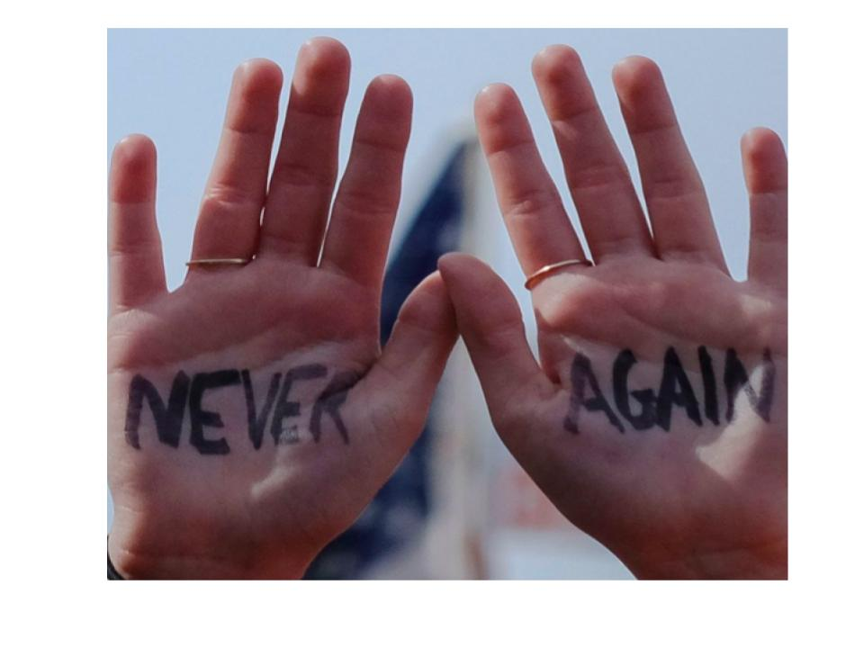
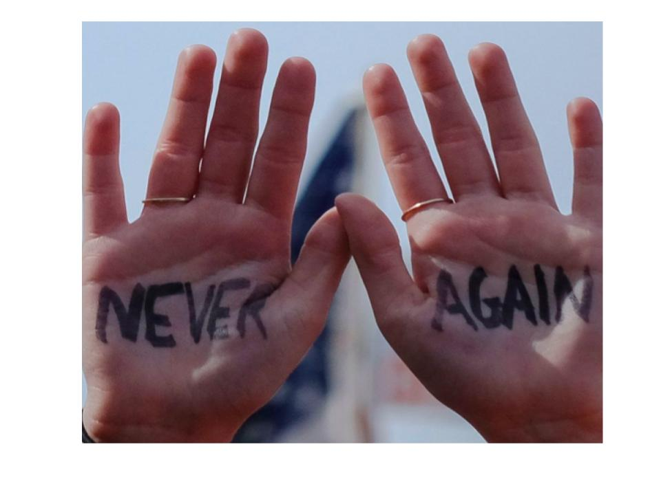

STATISTICS

★ There have been 1,300 school shooting incidents since 1970
★ 21 weeks into 2018, and there had already been 23 school shootings where someone was hurt or killed. That averages out to more than 1 shooting a week.
★ 2018 had the greatest number of incidents since 1970, with 82 recorded incidents. The next highest year was 2006 with 59 incidents.

★ In an April 2018 review of mass shootings in the U.S., 99 mass shootings have occurred since 1982, from which approximately 76 semi-automatic handguns and 89 assault weapons and weapons with high magazine capacity were recovered.
★ Women are 16 times more likely to be killed by guns in the US than in any other developed nation.
★ Every year, nearly 2,900 children and teens are shot and killed and nearly 15,600 more are shot and injured

★ Nearly two-thirds of all gun deaths in the U.S. are suicides: an average of 59 deaths a day
★ Over the past decade, the U.S. firearm suicide rate has increased by 19 percent
★ Men represent 86 percent of firearm suicide victims, and are over six times more likely than women to die by firearm suicide


 
